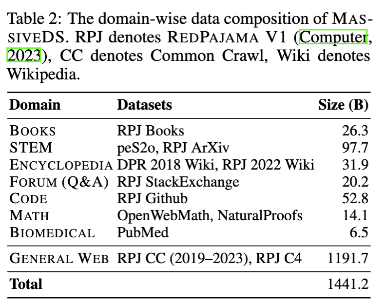
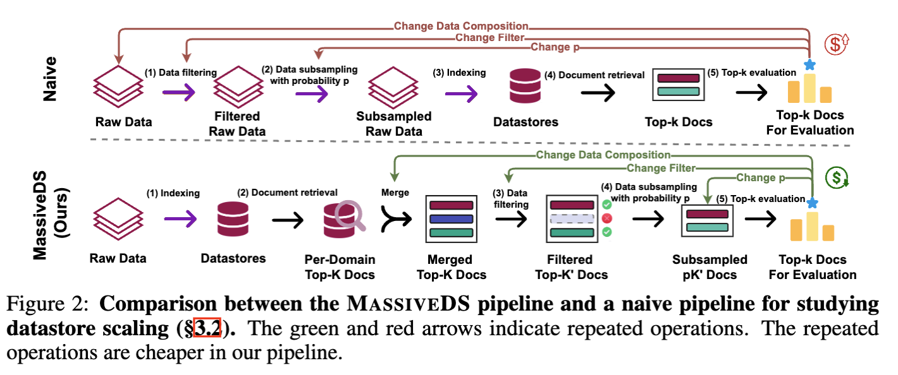
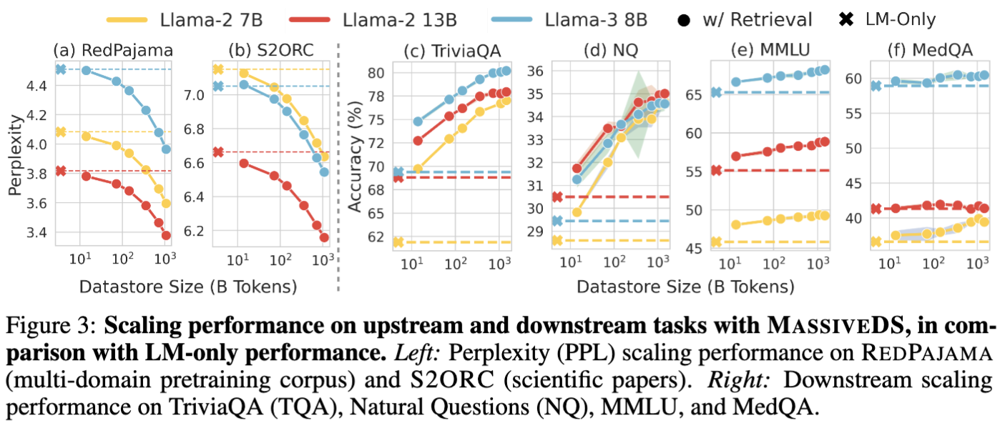
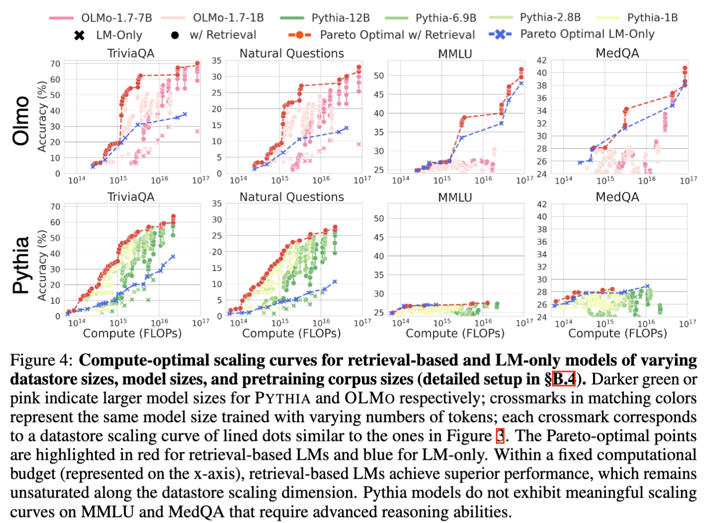
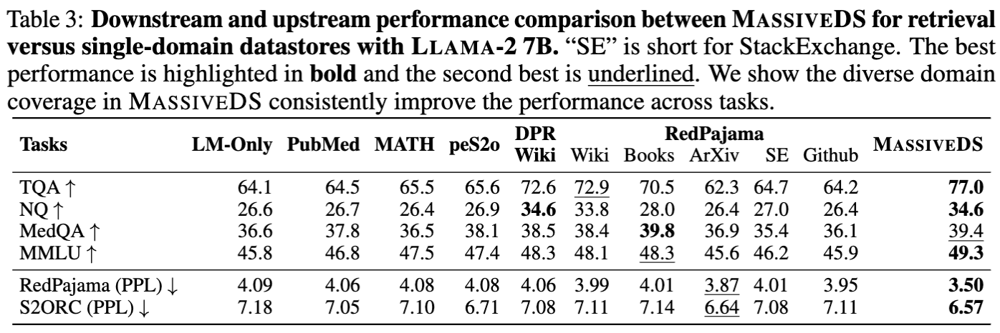
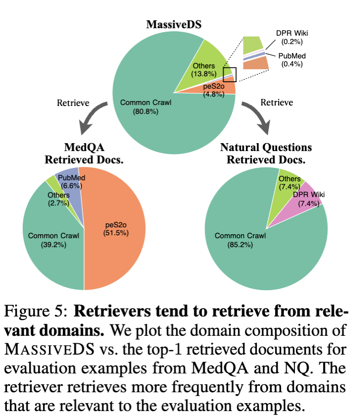
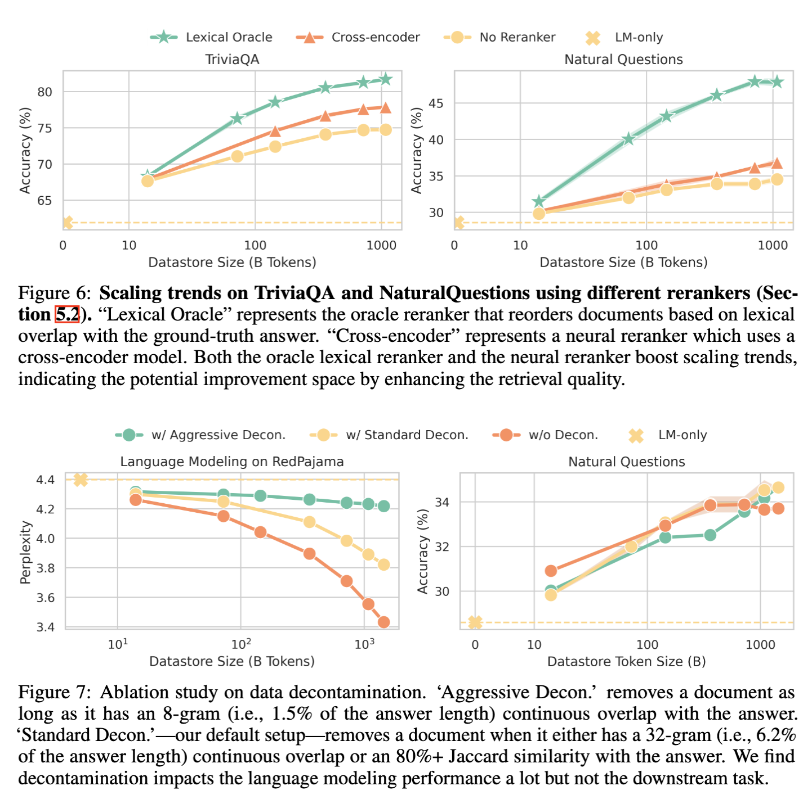

Scaling laws with respect to the amount of training data and the number of parameters allow us to predict the cost-benefit trade-offs of pretraining language models (LMs) in different configurations. In this paper, we consider another dimension of scaling: the amount of data available at inference time. Specifically, we find that increasing the size of the datastore used by a retrieval-based LM monotonically improves language modeling and several downstream tasks without obvious saturation, such that a smaller model augmented with a large datastore outperforms a larger LM-only model on knowledge-intensive tasks. By plotting compute-optimal scaling curves with varied datastore, model, and pretraining data sizes, we show that using larger datastores can significantly improve model performance for the same training compute budget.
We carry out our study by constructing a 1.4 trillion-token datastore named MassiveDS, which is the largest and the most diverse open-sourced datastore for retrieval-based LMs to date, and designing an efficient pipeline for studying datastore scaling in a computationally accessible manner. Finally, we analyze the effect of improving the retriever, datastore quality filtering, and other design choices on our observed scaling trends. Overall, our results show that datastore size should be considered as an integral part of LM efficiency and performance trade-offs. To facilitate future research, we open-source all artifacts.
MassiveDS MassiveDS is constructed from diverse data sources including both domain-specific data and massive web data, so that it can benefit a wide range of tasks. 
We also designed an efficient scaling experiment pipeline that lets us understand scaling trends on an academic budget. The key idea is to reorder the operations to make the repeated ones cheaper. We prove its equivalence to the naive implementation. 
Previous work has shown scaling datastore is helpful for language modeling, while it remains unknown how it applies to downstream tasks. We show MassiveDS not only helps language modeling but also downstream tasks including MMLU.
We find using larger datastores can significantly improve performance for the same training compute. Figure 4 shows compute-optimal scaling curves with OLMo and Pythia on 4 downstream tasks.
We compare the performance of MassiveDS with single-domain datastores in Table 3. The results show that MassiveDS matches or outperforms all single-domain datastores.
We further investigate the source of this robustness and found that the retriever tend to retrieve more the relevant domain depite the the existance of a large amout of OOD data.
Scaling trends can be improved with advanced retrieval, such as reranking. Also, data contamination has a large impact on language modeling evaluation, so we advocate applying strict decontamination for RAG perplexity evaluation.
All code is available at Github, and all datastore artifacts are available at Huggingface Space.
@article{shao2024scaling,
author = {Shao, Rulin and He, Jacqueline and Asai, Akari and Shi, Weijia and Dettmers, Tim and Min, Sewon and Zettlemoyer, Luke and Koh, Pang Wei},
title = {Scaling Retrieval-Based Language Models with a Trillion-Token Datastore},
year = {2024},
}